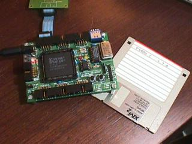

Next: 4 Modos de funcionamiento
Up: Tarjeta entrenadora para FPGA,
Previous: 2 Introducción a las
La tarjeta JPS-XP84[4] (ver foto en la figura 1)
es una tarjeta entrenadora para FPGAs, de propósito general, aunque
está pensada para ser utilizada fundamentalmente en robótica. Sus
dimensiones son reducidas (99x73mm) y dispone de conectores de expansión
de 10 vías, compatibles con cables planos.
Figure 1:
La tarjeta JPS, situada al lado de un disquete de 3 y 1/2''

|
Las FPGAs de la empresa Xilinx[7]que soporta la JPS se
muestran en la tabla 1. Todas ellas tienen
el encapsulado PLCC84, elegido por ser el de menor coste. Adicionalmente,
es uno de los pocos encapsulados actuales que pueden ser soldados
sin herramientas especiales para SMD.
Table 1:
FPGAs soportadas por la tarjeta JPS
|
| Device |
Logic cells |
Total CLBs |
Total FF |
|---|
| XC4003E |
238 |
100 |
360 |
|---|
| XC4005E |
466 |
196 |
616 |
|---|
| XC4010E |
950 |
400 |
1120 |
|---|
| XCS05 |
238 |
100 |
360 |
|---|
| XCS10 |
466 |
196 |
616 |
|---|
|
Las características de la tarjeta son:
- 6 puertos de expansión (48 pines), que dan acceso a las patas
genéricas de entrada/salida de la FPGA.
- Zócalo para la inserción de un oscilador que genere la señal de reloj
para los diseños síncronos.
- Led y pulsador de pruebas, conectados a unos terminales fijos
de la FPGA, para hacer pruebas de funcionamiento, sin tener que conectar
ningún circuito externo.
- Led de programación, conectado al terminal done, que
indica si la FPGA está correctamente programada.
- Tres switches de configuración genéricos, conectados a tres
terminales fijos, para ser utilizados como entradas de configuración
en los diseños realizados.
- Configuración del modo de carga de la FPGA: maestro o esclavo. El
modo maestro permite cargar la FPGA desde la memoria EEPROM
integrada en la propia tarjeta. El modo esclavo se utiliza para cargarla
desde un sistema externo (PC o un microcontrolador)
- Programación in circuit de la EEPROM.
- Pulsador para hacer reset de la FPGA.
- Conector para usar el cable de descarga (download) estándar
de Xilinx
Next: 4 Modos de funcionamiento
Up: Tarjeta entrenadora para FPGA,
Previous: 2 Introducción a las
Juan Gonzalez
2003-09-20